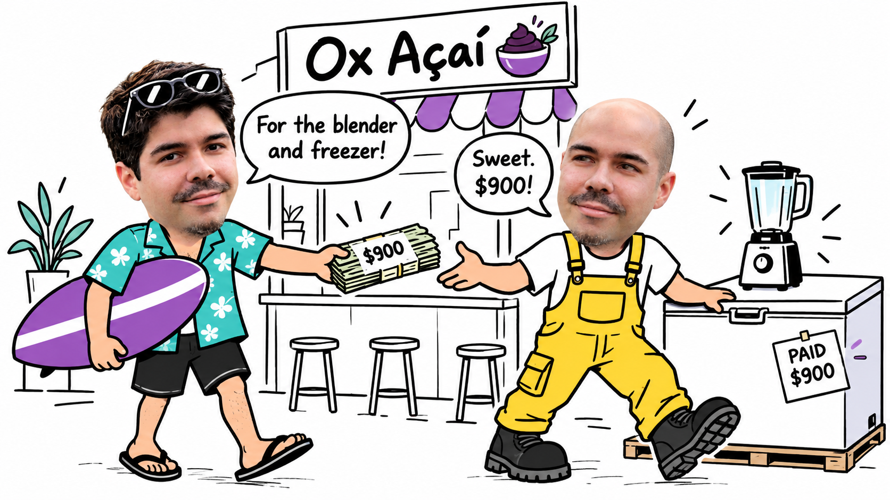
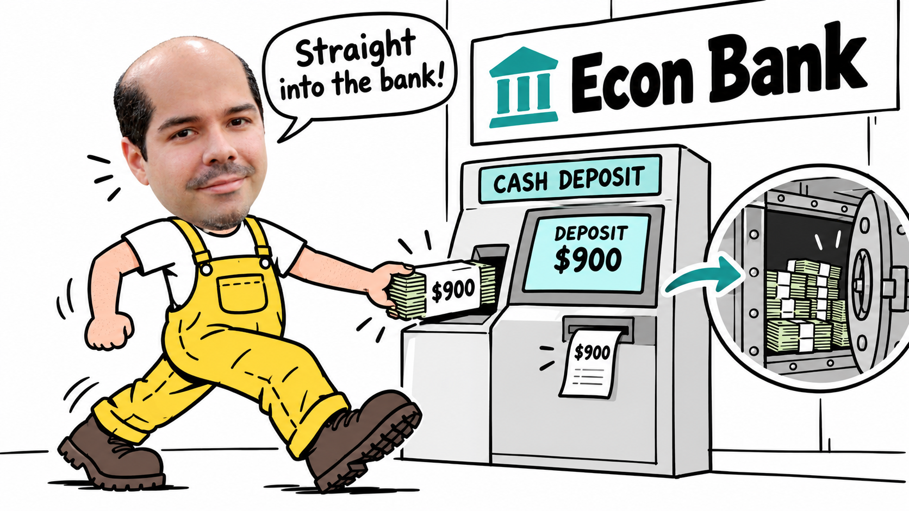
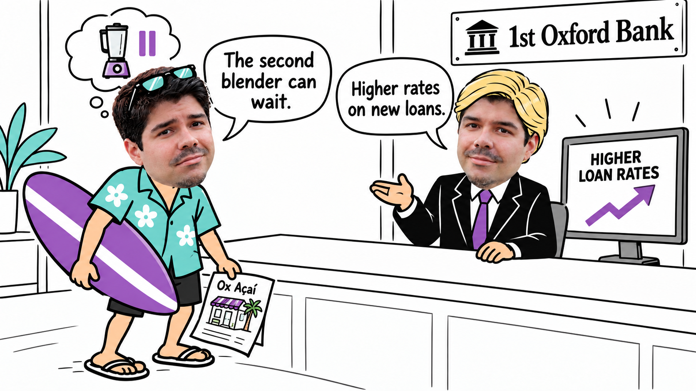

Chapter 14, Part 2
Oxford College of Emory University
Money Creation and Central Banks
Guilherme Paiva Pinto
October 29, 2026
Oxford College of Emory University
Guilherme Paiva Pinto
October 29, 2026
Trace deposits, loans and payments, distinguishing changes in the money supply from changes in the monetary base.
Money supply = public currency + checkable deposits
Simplified measure: M = C + D
| The same $1,000 | Currency (C) | Deposits (D) | Money (M) |
|---|---|---|---|
| Before depositing | $1,000 | $0 | $1,000 |
| After depositing | $0 | $1,000 | $1,000 |
The deposit changes the form of money, not its total.
Initial cash: $1,000 · Reserve ratio: rr = 10%


The next bank receives $900, keeps $90 and lends $810.
| Stage | Currency in circulation | Checkable bank deposits | Money supply |
|---|---|---|---|
| First stageCash held by the public | $1,000 | $0 | $1,000 |
| Second stageFirst deposit → $900 loan and payment | $900 | $1,000 | $1,900 |
| Third stage$900 redeposit → $810 new loan | $810 | $1,900 | $2,710 |
Determine total deposit expansion and explain the assumptions that limit the model’s application to actual banking.
Excess reserves = reserves − required reserves.
At Bank A: $1,000 − (0.10 × $1,000) = $900.
rr = 10% · Each row follows lending and payment to the next bank.
| Bank | Deposits | Reserves kept | New loan |
|---|---|---|---|
| A | $1,000 | $100 | $900 |
| B | $900 | $90 | $810 |
| C | $810 | $81 | $729 |
| … | … | … | … |
Initial cash deposit: $1,000 · rr = 0.10
D = 1,000 + 1,000(1 − rr) + 1,000(1 − rr)2 + …
D = 1,000rr = 1,0000.10 = $10,000
$10,000 total deposits includes the original $1,000.
$9,000 additional deposits are created through lending.
Under these assumptions, $1 of reserves supports $10 of deposits.
Full redeposit. People deposit the payments they receive.
Only required reserves are retained. Banks keep rr × deposits and lend the remaining amount.
At rr = 10%: a $900 deposit → $90 reserves + $810 loan.
More cash held by the public or more excess reserves
means less deposit expansion.
1/rr is the model’s simple deposit multiplier.
rr = 10% is our example; the U.S. statutory requirement is 0%.
Public currency is the overlap. Bank reserves and public deposits are different components.
Money multiplier = MMB
Next: how Fed operations change reserves and the monetary base.
$1,000 of existing public cash · rr = 10% · Full lending and redeposit
Does the money supply rise immediately?
No. Currency falls $1,000; deposits rise $1,000.
What are total deposits and the net increase in money?
Deposits: $10,000. Net increase in M: $9,000.
Does lending itself create monetary base?
No. It creates deposits; it does not create base money.
Explain the roles of the discount rate, interest on reserve balances and open-market operations.
The Federal Reserve (the Fed) is the U.S. central bank.
Its monetary-policy goals: maximum employment and stable prices.
Monetary policy: influence borrowing and spending to help reach those goals.
The tools we will study:
12 Reserve Banks. San Francisco also serves Alaska and Hawaii.
7 governors · Washington, D.C.
Each governor:
The U.S. President nominates;
the U.S. Senate confirms.
Full term: 14 years.
One term ends every two years.
Chair: chosen from the governors by the same process, for four years.
Why regional banks? Share responsibility and bring local economic conditions into national decisions.
FOMC = the Fed’s monetary-policy committee.
Board governor seats
Permanent votes
New York Fed president
Permanent vote
Other regional presidents
One-year voting turns
Chooses whether to raise, lower or hold the federal funds rate target range.
Directs bond purchases and changes in the Fed’s bond holdings.
For our activity: the statement explains the decision and goals; the implementation note gives the operating steps.
The Board of Governors sets reserve interest and approves discount rates.
One president from each group votes for one year.
| Reserve Bank group | 2026 voting president |
|---|---|
| Boston, Philadelphia, Richmond | Anna Paulson · Philadelphia |
| Cleveland, Chicago | Beth M. Hammack · Cleveland |
| Atlanta, St. Louis, Dallas | Lorie K. Logan · Dallas |
| Minneapolis, Kansas City, San Francisco | Neel Kashkari · Minneapolis |
The New York Fed president always votes. The seat passes to each successor. Its trading desk carries out FOMC market operations.
All 12 regional presidents discuss policy; seven participate without a vote that year.
Monetary policy · financial stability and supervision · payments
Overnight, unsecured lending of balances at the Fed
between banks and other eligible institutions.
FFR: the federal funds rate—the interest rate in this market.
| Policy tool | What changes |
|---|---|
| Discount rate | Cost of borrowing from the Fed |
| Interest on reserve balances | Return on eligible balances at the Fed |
| Open-market operations | Securities and bank reserve balances |
Next week: interest rates, spending, and aggregate demand.
The Fed lends to eligible banks against collateral.
Lower discount rate:
Cheaper Fed funding; borrowing becomes more attractive.
Higher discount rate:
Costlier Fed funding; borrowing becomes less attractive.
IORB pays banks on eligible balances held at the Fed.
A reservation rate:
a safe alternative return to lending.
Higher IORB raises that benchmark;
lower IORB reduces it.
IORB influences lending rates; it is not a fixed minimum rate on every loan.
The Fed buys a $1,000 Treasury security from a commercial bank.
Bank reserves +$1,000 · Monetary base +$1,000
Bank securities −$1,000 · Public deposits: no immediate change.
Loan-rate effects are conditional; reserve changes alone do not guarantee them.
The Fed sells a $1,000 Treasury security to a commercial bank.

Bank reserves −$1,000 · Monetary base −$1,000
Bank securities +$1,000 · Public deposits: no immediate change.
Loan-rate effects are conditional; reserve changes alone do not guarantee them.
ECB = European Central Bank · Eurosystem = ECB + euro-area national central banks.
| Federal Reserve | ECB / Eurosystem | |
|---|---|---|
| Central board | 7 Board governor seats | 6 Executive Board members |
| Policy committee | FOMC | Governing Council |
| Operating network | 12 regional Reserve Banks | Euro-area national central banks |
| Main policy goals | Maximum employment; stable prices | Price stability is primary |
Both use policy rates, lending facilities, and asset operations.
The ECB’s deposit facility offers a comparable remuneration benchmark.
Connect historical crises to changes in central banks’ responsibilities and policy approaches.
Withdrawal demands outran available cash; emergency support depended on private coordination.
A central reserve system could supply liquidity when individual banks could not.
The Fed did not prevent a severe monetary contraction. The 1933 Banking Act created federal deposit insurance.
Policy lesson: Central-bank liquidity and deposit protection address different sources of banking instability.
Thrifts held long-term, fixed-rate mortgages while rising rates increased their funding costs.
Broader investment powers, weak capital and insured deposits encouraged costly risk-taking.
FIRREA reorganized thrift oversight and resolution. Public funds helped cover the failed institutions’ losses.
Policy lesson: Deposit insurance needs capital, supervision and risk controls to limit excessive risk-taking.
Mortgage-related losses and withdrawals of short-term funding spread stress beyond deposit banks.
The Fed expanded liquidity lending and asset purchases; the Treasury provided capital support.
New systemic-risk oversight and consumer protection addressed gaps exposed by the crisis.
Policy lesson: Central-bank tools must address market-wide funding stress, beyond runs at deposit banks.